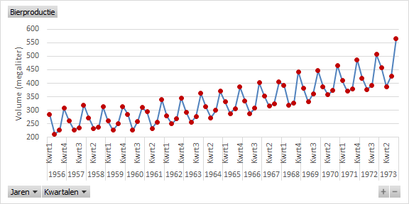
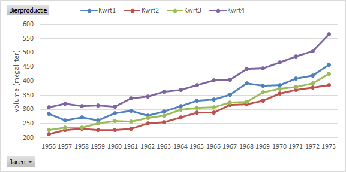

Taak: Australische bierproductie
Als voorbeeld van een tijdreeks wordt de bierproductie (in megaliters) in Australie voor de jaren 1956-1973 bekeken en geanalyseerd.
- Open het hulpbestand.
-
Selecteer een cel in de tabel en kies dan
Op een nieuw werkblad wordt een lege draaitabel aangemaakt.
-
Voeg het veld Volume toe aan het gebied
Waarden en het veld Datum aan het
gebied As (categorieën).
Naast het veld Datum worden ook de velden Jaren en Kwartalen aangemaakt.
- Wijzig het grafiektype in Lijn met markeringen.
-
Selecteer in de draaitabel een willekeurig jaar. Daarna Rechter muisknop en
kies uit het snelmenu .
Zowel in de draaitabel als draaigrafiek worden de jaren uitgesplitst in kwartalen. In principe is de tijdreeks nu zichtbaar. Echter de layout kan nog verbeterd worden.
-
Breng de volgende wijzigingen in de lay-out aan.
- Verwijder het veld Datum uit het gebied As in de lijst met Draaitabelvelden.
- Wijzig in de draaitabel in de cel rechtsboven de tekst "Som van Volume" in "Bierproductie". Hierdoor wijzigt ook de tekst linksboven in de draaigrafiek.
- Schaal de Y-as van 200 tot 600 met stappen van 50.
- Voeg een titel aan de Y-as toe.
- Verwijder de legenda en grafiektitel.
- Maak de lijn iets dunner en geef de markeringspunten een andere kleur dan de lijn.
- Pas eventueel de afmetingen aan.
Figuur 1. Australische bierproductie (megaliters) per kwartaal In de grafiek zie je de volgende kenmerken:- Er is een opwaartse trend, mogelijk geen rechte lijn maar iets gebogen.
- Er is een sterke seizoensgebondenheid te zien door de regelmatige pieken en dalen gerelateerd aan de verschillende kwartalen. De top ligt steeds bij kwartaal 4, de dalen bij de kwartalen 2 en 3 en de waarden voor kwartaal 1 liggen tussen piek en dal.
- Er zijn geen uitschieters.
- Er is geen lange termijn cyclus.
- De variantie in de waarden lijkt iets toe te nemen in de tijd.
Om een beter beeld te krijgen van de seizoensgebondenheid wordt de grafiek gewijzigd zodat de gegevens voor elk jaar worden uitgezet tegen de afzonderlijke kwartalen.
- Verplaats in de lijst met draaitabelvelden het veld Jaren van het gebied As naar het gebied Legenda.
-
In de draaigrafiek:
- Voeg een legenda toe aan de bovenkant.
- Rechter muisklik op de legenda en kies dan uit het snelmenu
- Rechterhuisklik op de legendaknop en kies Legendaveldknopppen verbergen in de grafiek
Figuur 2. Jaarlijkse Australische bierproductie (megaliters) per kwartaal 
De seizoensgebondenheid is nu duidelijk waar te nemen.
Om het gedrag per kwartaal te bestuderen worden de gegevens voor elk kwartaal uitgezet tegen de jaren.
-
Verwissel de velden Jaren en Kwartalen in
de lijst met draaitabelvelden, dan staat Jaren in het gebied
As en Kwartalen in het gebied
Legenda.
Figuur 3. Kwartaalproductie van bier per jaar in Australie Nu kun je goed zien dat de eerder waargenomen stijgende trend voor elk kwartaal geldt.